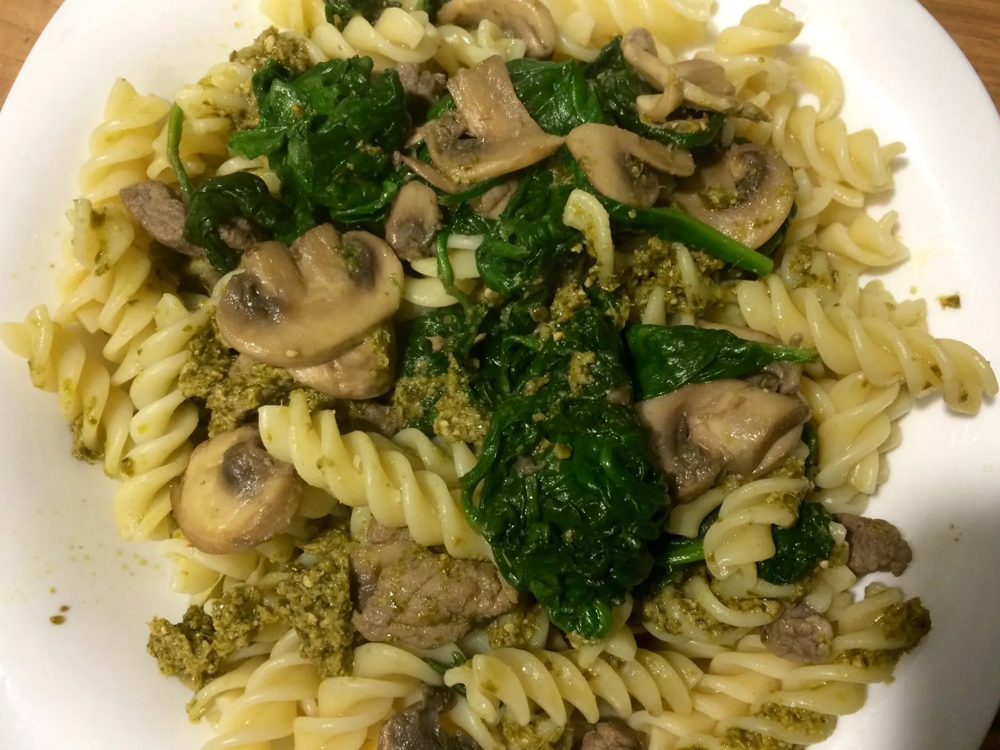
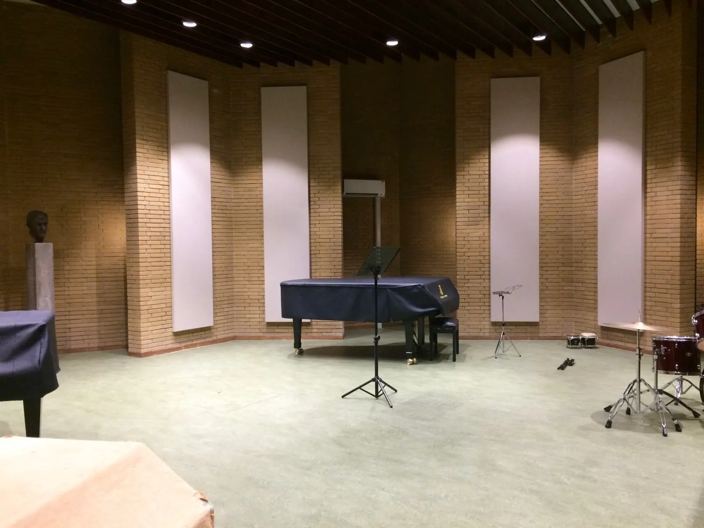
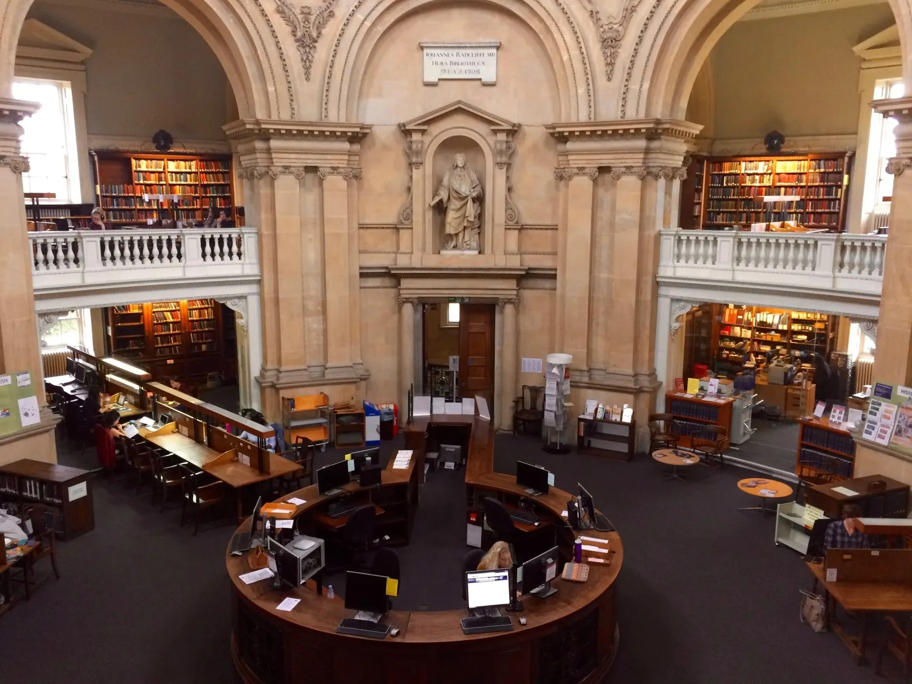
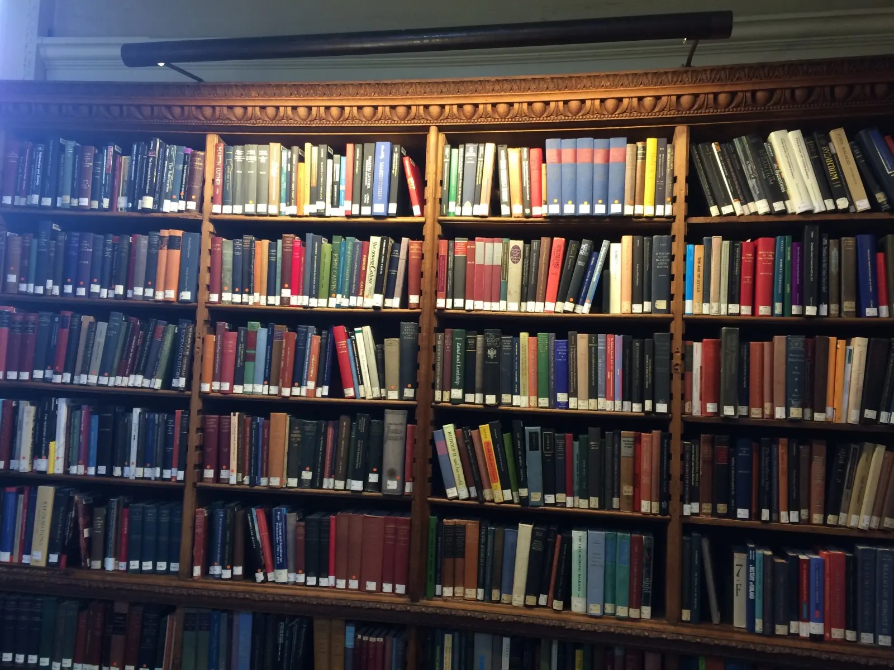
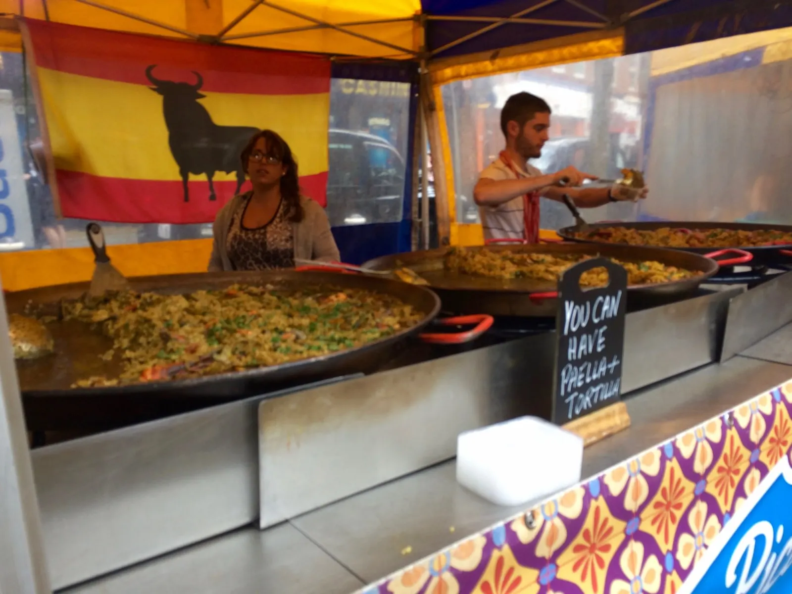
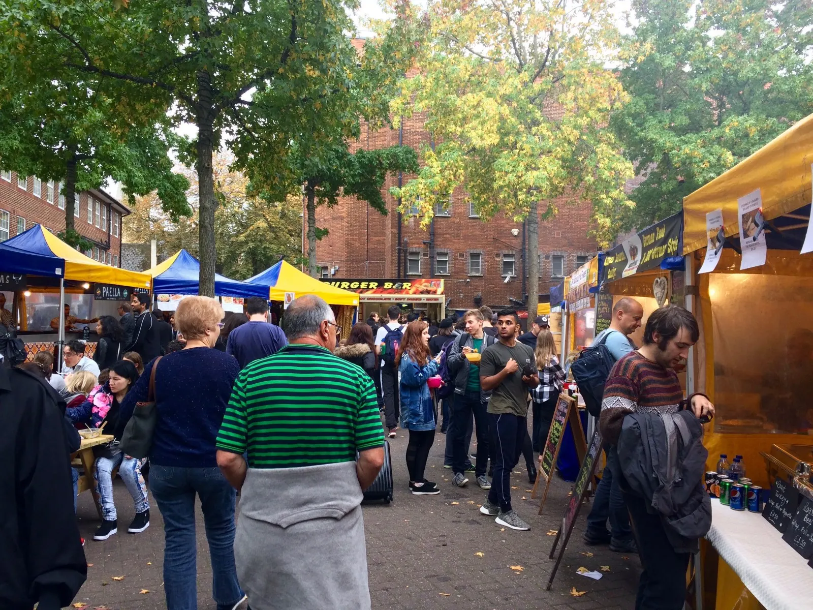
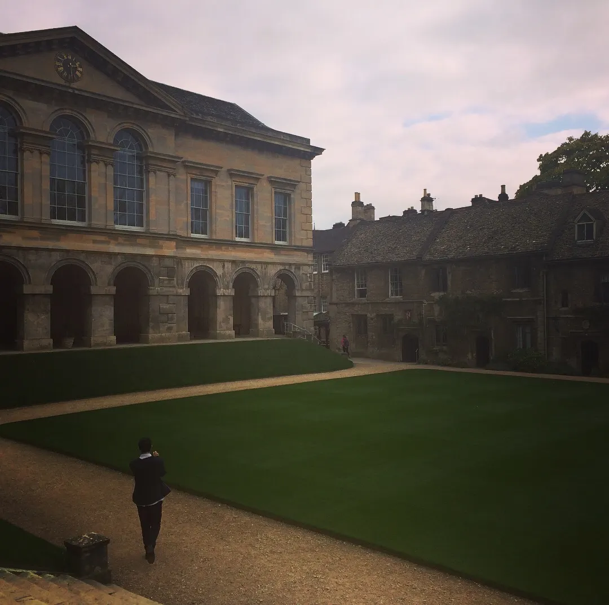
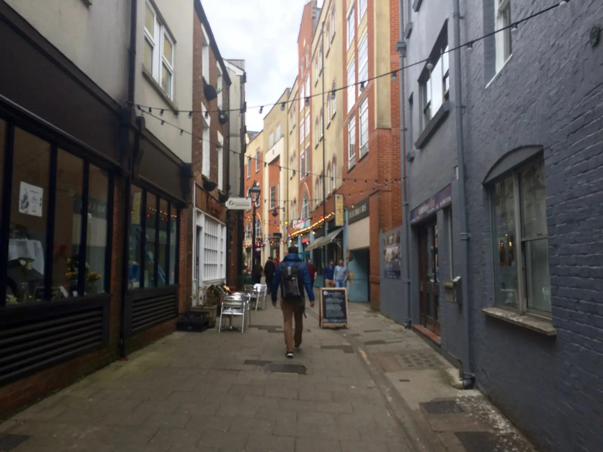

Sunday, October 8, 2017 – First day of term!
Breakfast: British gala apple (note: not just any gala apple)
Went to the old Bodleian library with Sophia to study. The library surrounds an open square where a group of Asian tourists were taking pictures. We were a little early, and the library guard was very blunt. I asked him if he knew when the library opens? Yes I do, he told me. I had to ask again before he would tell me 11am.
With 20 minutes to kill, we cheered on runners running the Oxford Half Marathon—a band was playing happy jazz music and people were cheering on the sidelines. I’d never seen this many people in the town.
Learned some more British lingo during lunch: that our sidewalk is their pavement, that intersections are not crosswalks in that cars have the right of way, that pants, panties, and knickers refer to underwear. What they consider vests and tank tops are different too; we were quite confused about that.
Back in the St Catz library, I found a desk upstairs in the corner. I was sitting by the window, where sunlight was coming in and where ladybugs were hanging out. I kinda regret that I put International Relations as a top choice, as it is a course I can take at Wellesley. But I reminded myself that the one-on-one tutorial system will be a different experience regardless.
Since there’s no dinner on Sundays, cooked with Odelia and enjoyed delicious meal and company.

Felt in music and movie mode but don’t have that luxury right now. Found out I was on the Blues tennis team which means practice at 6am tomorrow, so walked to the porters lodge and checked out a racket.
Monday, October 9, 2017 – Why am I doing this to myself?
This is what I was thinking when my alarm rang at 5:30am and I forced myself out of bed. We had to take a taxi to Abingdon, an athletic center with indoor courts, a whopping 30 min drive away (but the university courts are not very good). That was my first time in a car with a wheel in the shotgun seat.
It felt good to play tennis. I learned that lemon squash is diluted lemon juice, and that squash is a concentrated syrup used in beverage making. The tennis commitment here is much less. Unlike at Wellesley, playing on the team here is a relatively low commitment: 2 practices a week, one match a week, and a social/crew date with a guys sports team every Wednesday night. And you don’t have to attend everything. What’s nice about this is that everyone on the team plays solely because they enjoy the sport and want to be there, which is not always true in the States.
Lunch: peas, sweet potato fries, chicken and sweet potato pie. Had a discussion on languages—I learned about Danish and German, how in Danish you can’t know how to pronounce a word until you’ve heard it, and how in both Danish and German nouns and verbs change form depending on where in the sentence they are.
The social science library was quite busy, with people typing away at their laptops.
Had dinner with people who I happened to sit with: a guy from China, a first year with her group of friends. I ate quickly and was soon back in the Catz library to finish my papers (gotta write one from scratch tomorrow because I signed up for a tennis match on Wednesday, the day it’s due).
At 9pm, I was falling asleep in the library. But I need to finish two essays and a book review by tomorrow!!
Tuesday, October 10, 2017 – Library
Like yesterday, spent all day in the library: emailed the essay and book review to my tutor at 5. One down, one more due tomorrow at noon.
It gets hard to concentrate after sitting in front of a laptop all day with the only breaks being lunch and dinner (which thankfully aren’t spent in front of a laptop). But it is super interesting and new for me to think about poverty from a behavioral perspective, which is the topic for my first essay in development economics.
Wednesday, October 11, 2017 – Road trip to play tennis!! What better way to spend the day
Up at 7 am, walked to Sainsbury’s to buy breakfast and a sandwich for lunch, met Fran, Sarah, and Nanami in front of Queens College, took taxi to a car hire place where we rented a car. Unlike in the States, there are small grocery stores everywhere where you can grab a cheap meal rather than large, less frequent stores.
Most cars here are manual rather than automatic—I guess they are considered the cool type of car, the “real” deal.
It was a three hour drive to Exeter University. We drove through green lands under cloudy skies, saw some cute sheep and black and white cows. Took a nice nap on the way there; apparently I slept with my eyes half open.
It’s been forever since I last played a match but I quickly had to get back into match mode. My doubles match was the most stress I’ve been in in a while. I lost in a 10-point tiebreak but won my singles as my opponent wasn’t very consistent. Sitting there watching my teammates compete brought back memories of college tennis. Tennis here is different from Wellesley in that the coach isn’t there—he isn’t employed by the university—and only 4 players compete per match. The environment is less stressful: we chatted during changeovers, with our opponents! It’s a competitive but also fun environment.
After being indoors for hours, we came out and remembered that the outdoors exists (lol). Got a quick dinner at Costa: had pasta with meatballs and tried panettone, an Italian cake eaten with butter—kinda like raisin bread.
After spending literally all of Monday and Tuesday in the library, it was good to take a break from books and laptop screens today. But it is a commitment—we left at 8:30am and got back at 10:30pm. Shower and sleeping in a comfortable bed never felt so good as they did that night.
Thursday, October 12, 2017 – First tutorials!
Had porridge (aka oatmeal) here for the first time, with honey (the lady was confused when I asked for raisins). Also had an orange because this is fresher’s flu season and it seems that everyone is getting sick, including my tutors.
Both of my tutorials in International Relations and Development Economics are on Thursdays, which is nice because once it’s done you feel free, like a burden has been lifted off your shoulders. But that means Mondays and Tuesdays are quite stressful.
Had my first tutorial—IR—at 10am in the classroom right next to my staircase. My tutor had me read my entire paper out loud (which actually helps in seeing whether your essay flows and makes sense), then proceeded to ask questions that I hadn’t even thought about, taking apart the at-surface-level simple arguments. But she wasn’t too interrogative—it was all to get me to think deeper about fundamental issues and definitions—and we had a good discussion.
My second tutorial in Development Economics was after lunch. This one was two-on-one with Jan, a visiting student from Germany. He has a lot to say so I was happy to let him talk and learn from him. I’m pretty easily persuaded; I basically agreed with the statement of the prompt, and my tutor advised me to be a devil’s advocate, to be more critical next time. You don’t have to agree with the readings I give you, she told me. Jan and I left her office an hour later, talking about the German education system and the struggles of applying for internships. Jan advised me to apply with my Oxford email (bias is real). We also ran into Sam and had a conversation on how expensive U.S. tuition is.
Tutorials are a different way of learning that force you to know your argument well, I soon realized. They challenge me to think critically about important issues and have definitely encouraged me to see these issues in a different way. Office hours back at Wellesley are essentially tutorials, I realized. Except you have to be proactive and prepared, as the professor is not obligated to have an hour-long discussion with you.
Time here passes so quickly: did nothing the rest of the day, had pasta, and went to tennis practice. Everyone on the team is really nice. I’ve been borrowing a racket from Catz, but it’s an air hybrid, not very good quality. I finally asked Coach Ed today if he had a spare racket and he said he has a demo I can use. He looked at my sad, smaller-than-normal racket and remarked, how you’ve been playing is impressive with that racket.
Friday, October 13, 2017 – Mashed lima beans and music
Spent some time in the afternoon skimming International Relations and the Third World, Britain and the United States, and The British Economy 1870-1939—“fun” books unrelated to my tutorials.
Had mashed lima beans for dinner. I don’t think I’ve ever had mashed lima beans before. It’s interesting how many different ways they serve peas and potatoes and beans here.
Went out to the music house after dinner to practice some piano, which was in a corner in the back of campus, in the middle of the woods essentially. It took me a while to find it and use the right key to open the door, and it was a bit creepy opening the creaking door and fumbling around in the dark for the light. But when the lights came on, I found myself in a small cozy room with two grand pianos, a harpsichord, and a drum set. Since it had been so long since I played and I relied on my muscle memory, I often had to play phrases in the middle before the beginning came to me. But it felt good just to play freely. Time always passes so quickly in the practice room—it’s so refreshing to immerse myself in beautiful pieces, forget about the outside world, and just play for myself.

Saturday, October 14, 2017 – Lots of students in black and white suits and gowns
The streets were full of people and bikers. It was matriculation day for the [real] Oxford students. Outside the Radcliffe Camera (aka “Rad Cam”) students dressed in black and white suits and gowns were laughing and taking pictures. I went inside for the first time: the earliest example in England of a circular library, it was designed in neoclassical style and built from 1737-1749 to house the Radcliffe Science Library. It was funded by John Radcliffe, a doctor.


I walked up the spiral staircase and took photos of the dome ceiling before seeing the No Photography sign . . . oops. (But I’m still glad I got the photos haha.)
Walking around, the excitement I felt when I first walked the Oxford streets was renewed. I realized how much I had already gotten bogged down by classwork and lost the excitement of being here and forgotten how much more there is to discover about this town. Am I here to study or sightsee? I thought to myself.
I met up with Sarah, who I met on the tennis team, and her friend Inda at the Gloucester Green Market, where there were lines of tents selling all sorts of delicious-smelling food, including Ghanaian, Ethiopian, dumplings, fudge, Singaporean, paella, and German sausage. Helped myself to dumplings and an Ethiopian plate of rice and lamb stew.


We ate in the grounds of Worcester College on a beautiful expanse of green, before they showed me around the campus. And what a beautiful campus it was, with a lake, perfect flowers, and apple trees with apples that were sweeter than ones from the grocery store.

Stopped by Tesco before heading back and stocked up on bananas, mandarins, granola bars, scones, apples, and Cadbury chocolate. Ate a piece of chocolate as my boost to work for the next hour.

Played pool in the JCR before dinner. The JCR is where it’s at!
Prompt for one of my next papers: What contribution (if any) does international law make to international order? Time to do more reading!